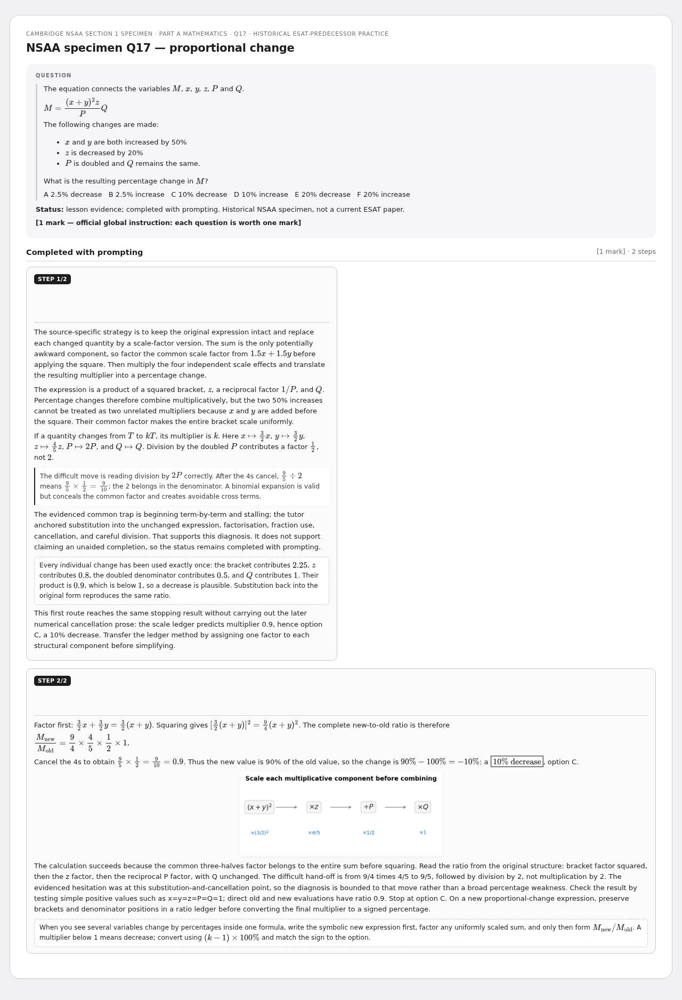
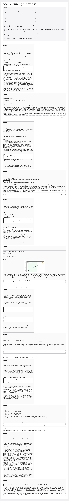
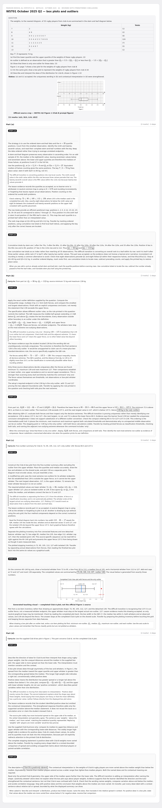
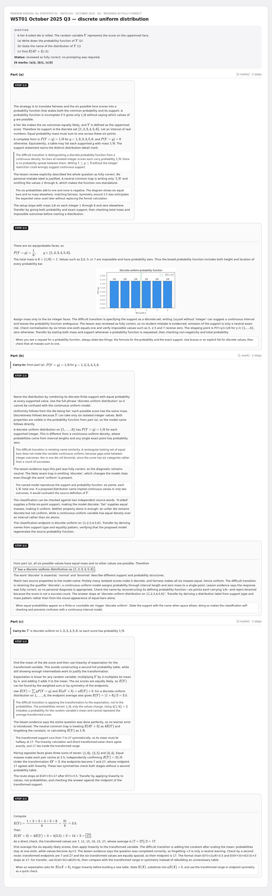
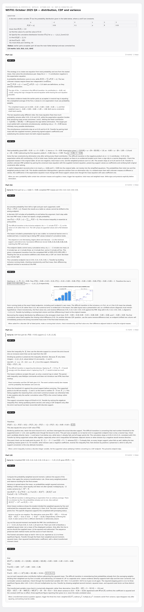
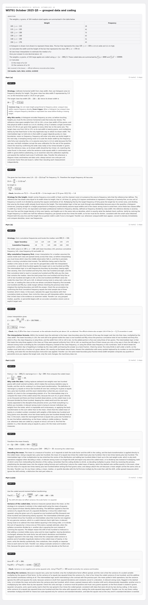
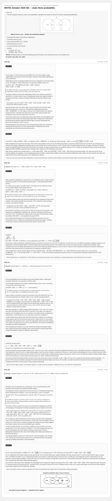
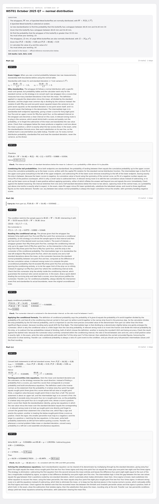
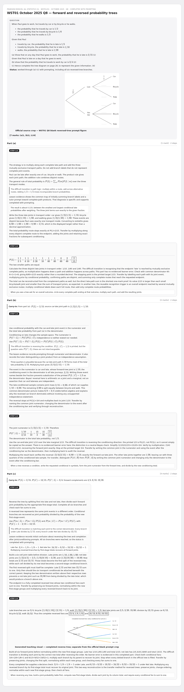

29 June - S1 (WST01/01) + ESAT predecessor
Rebuilt multi-step cards - review preview. Not part of the live deck.
9 cardsWST01/01Oct 2025S1NSAA
NSAA specimen Q17 — proportional change
Cambridge NSAA Section 1 specimen · Part A Mathematics · Q17 · historical ESAT-predecessor practice

WST01 October 2025 Q1 — regression and correlation
Pearson Edexcel IAL Statistics S1 · WST01/01 · October 2025 · Q1 · reviewed with corrections

WST01 October 2025 Q2 — box plots and outliers
Pearson Edexcel IAL Statistics S1 · WST01/01 · October 2025 · Q2 · reviewed with strengthened conclusions

WST01 October 2025 Q3 — discrete uniform distribution
Pearson Edexcel IAL Statistics S1 · WST01/01 · October 2025 · Q3 · reviewed as fully correct

WST01 October 2025 Q4 — distribution, CDF and variance
Pearson Edexcel IAL Statistics S1 · WST01/01 · October 2025 · Q4 · part (d) corrected live

WST01 October 2025 Q5 — grouped data and coding
Pearson Edexcel IAL Statistics S1 · WST01/01 · October 2025 · Q5

WST01 October 2025 Q6 — chain Venn probability
Pearson Edexcel IAL Statistics S1 · WST01/01 · October 2025 · Q6 · completed with prompting

WST01 October 2025 Q7 — normal distribution
Pearson Edexcel IAL Statistics S1 · WST01/01 · October 2025 · Q7

WST01 October 2025 Q8 — forward and reversed probability trees
Pearson Edexcel IAL Statistics S1 · WST01/01 · October 2025 · Q8 · completed with prompting
